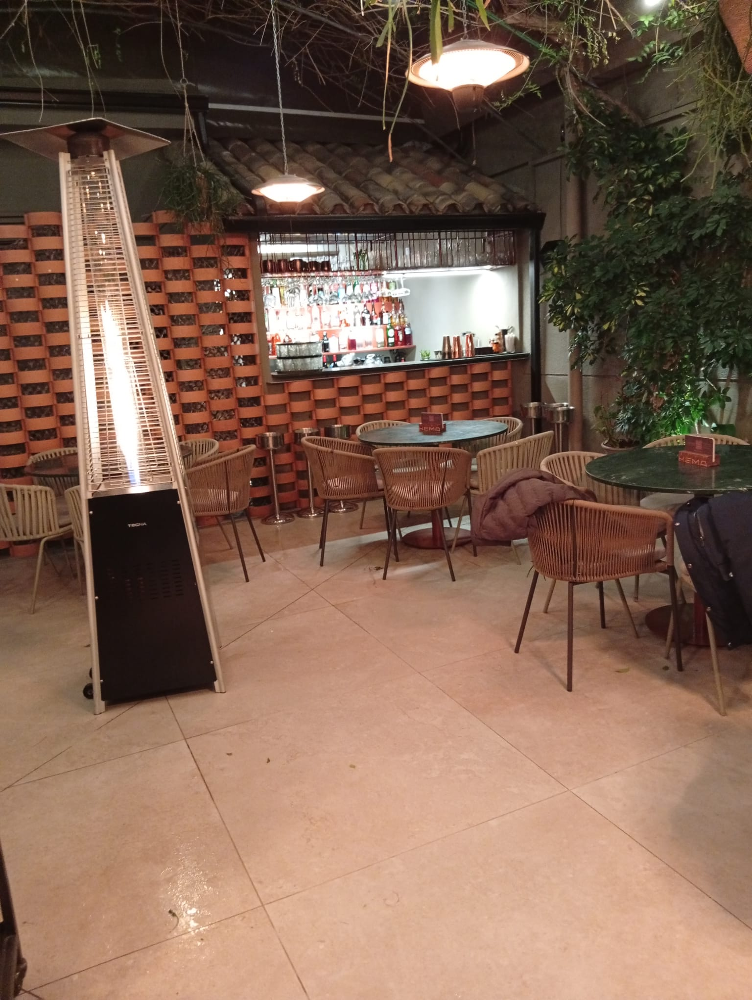
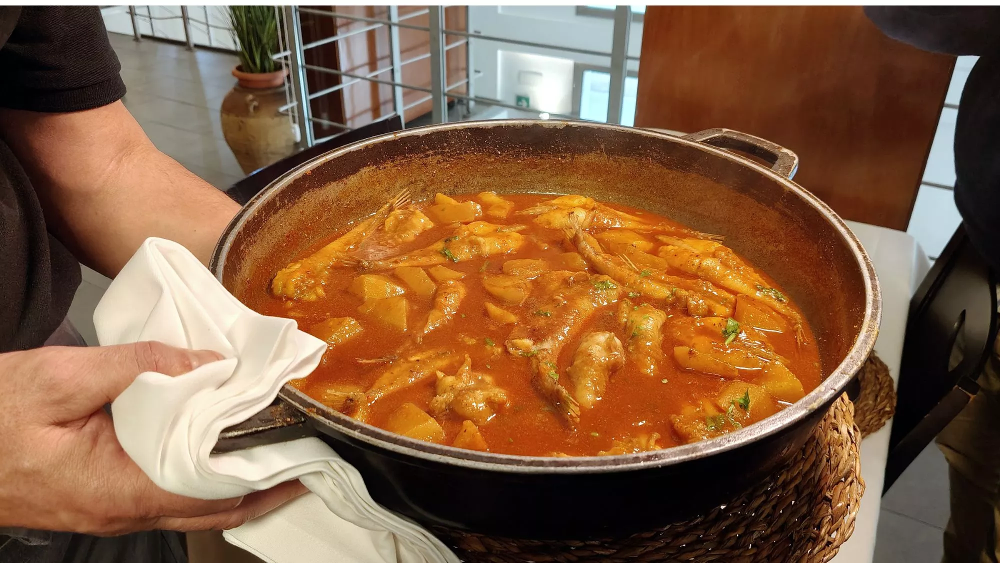
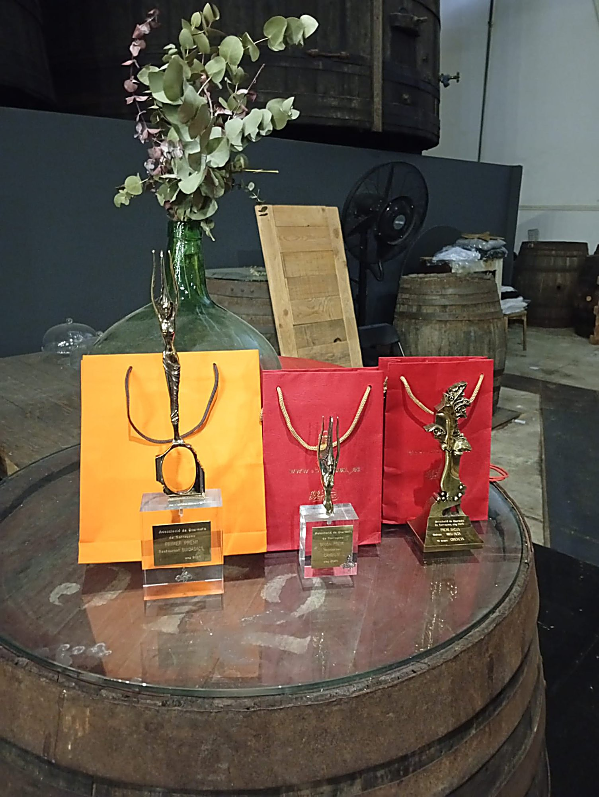
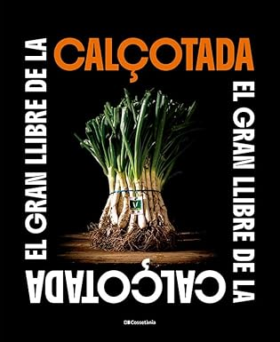

CrónicaKema · Cambrils
Crónica de la 1ª visita
Brasa, producto de calidad y coctelería diferencial. Crónica completa de la primera visita de la temporada 2026.
Leer →Blog Gourmet
Previas, crónicas, noticias y vinos del Camp de Tarragona. Todo lo que rodea a la mesa de los Gourmets.
 Crónica
Crónica
Cocina mediterránea de producto, servicio clásico y la constatación de que no siempre es necesario cambiar lo que funciona. Crónica completa de la 2ª visita del Recorrido Gourmet 2026, con la presencia especial de José Vilaseca y los Casacas Rojas.
Leer la entrada completa →
CrónicaBrasa, producto de calidad y coctelería diferencial. Crónica completa de la primera visita de la temporada 2026.
Leer → Previa
Previa
Una propuesta 360° donde el fuego manda. Todo lo que había que saber antes de la primera visita de la temporada.
Leer →
Crónica
Cuarenta años frente a la Platja dels Capellans. Cocina mediterránea de producto, servicio clásico y la constatación de que no siempre es necesario cambiar lo que funciona.
Leer →
Previa
Cuarenta años frente a la Platja dels Capellans. Todo lo que había que saber antes de la 2ª visita del Recorrido Gourmet 2026.
Leer → Noticia
Noticia
El restaurante de la Platja dels Capellans cumple cuatro décadas. Un referente de la Costa Daurada que ha sabido mantenerse fiel a sus principios.
Leer →
CuriosidadesHistoria, origen y receta de la salsa que define la cocina del Camp de Tarragona. Del Serrallo a las mesas del mundo.
Leer →
CuriosidadesEl nombre, el trofeo, el proceso de votación y el palmarés de los galardonados. Todo lo que hay que saber sobre el máximo reconocimiento de los Gourmets de Tarragona.
Leer →Buidasacs y Cambium, Trofeos Gastronía. Cirerets de Mas Alta, Premio Bacus. Una noche de reconocimiento y emoción en el Camp de Tarragona.
Leer →
CulturaNuestra selección de lecturas gastronómicas para este 23 de abril. Tres títulos de Cossetània Edicions (Valls) y un autor de Reus hacen de esta lista un recorrido literario con raíces en el Camp de Tarragona.
Leer →